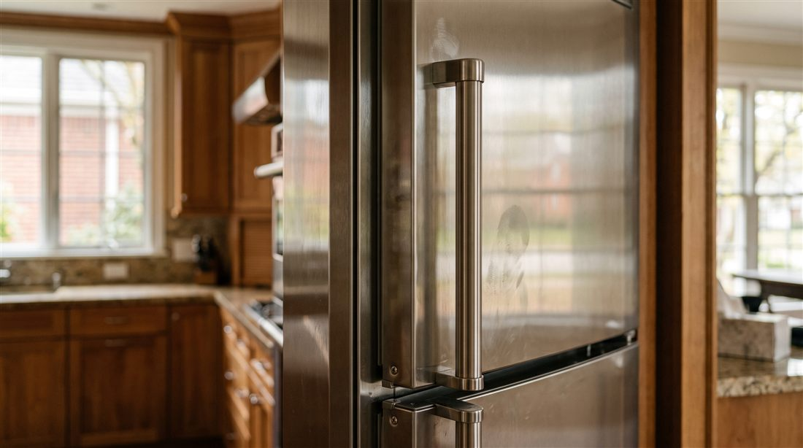

Sub-Zero
Water on the floor means a fault upstream. We find it before your floors pay for it.

Water at the base of a Sub-Zero has a short list of origins. A clogged defrost drain icing over and overflowing. A cracked or kinked water line to the ice maker. A tired inlet valve. Or a drain pan that shifted or split.
Because built in units sit flush against cabinetry, small leaks can travel invisibly along the toe kick before they surface. We trace the water to its source, repair it with factory parts, and inspect the surrounding cavity so a slow drip never turns into a subfloor claim.
The most common source. Meltwater backs up, freezes into a sheet, and overflows into the compartment or onto the floor.
Plastic lines harden and split with age. We replace the line, route it properly, and pressure test it.
A valve that no longer seats fully weeps constantly. Slow, silent, and destructive.
After moves or floor work, pans shift. Condensate misses the pan and finds the hardwood.
If the leak is active and you can reach the supply valve, yes. Then call us. If not, towels at the toe kick, keep the doors closed, and know that active leak calls get priority.
It can corrode hinges, rust the base pan, and short low voltage connections. Fixing it early costs far less than fixing it late.
We stop the water and document the source in writing. That documentation is exactly what your flooring contractor and insurer will ask for.
One call, and it is handled. Open daily, 7am to 7pm.
Same day slots are limited and go to the first callers. The diagnostic is credited toward your repair, so it costs you nothing to find out.